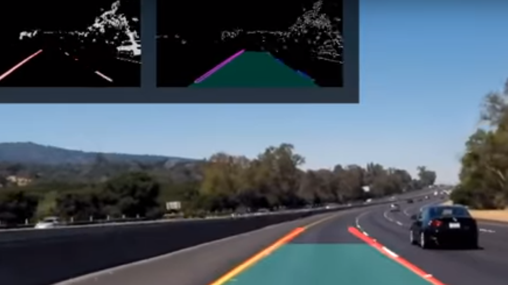
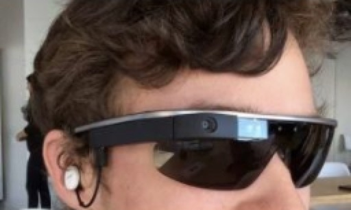

孙鹏
Contact:
sunpeng AT sensenet DOT com
About Me
I am currently a senior student from Department of Computer Science and Technology of Harbin Institute of Technology (HIT), Harbin, China.
My research interests lie in computer vision(Image/Video Semantic Segmentation, Image/Video Object Detection and Image/Video Instance Segmentation), deep learning, and auto-driving.
Education

Sep. 2014 - Jun. 2018 , Department of Computer Science and Technology, Harbin Institute of Technology,
Bachelor of Engineering，outstanding graduates.
Sep. 2018 - Mon. 2021 (Expected), Department of Computer Science and Technology, Zhejiang University,
Master of Science.
项目 & 研究经验

{kind=link}
车道线 & FreeSpace & 车道线属性联合检测 for auto driving.
Peng Sun, Guangliang Cheng and Jianping Shi
2017.10 - 至今, SenseTime, Beijing
车道线检测、车辆可行驶区域检测和车道线属性判别的模型算法研究工作，模型联合训练(joint training)，研究的算法为宇通、本田自动驾驶及辅助驾驶提供。
视频分割、视频检测算法研究工作。
{kind=link}
手机百度端人脸猜词
Peng Sun, Liangliang He and Xiangyu Hu
2017.07 - 2017.10, Baidu, Beijing
作为主要负责人研发手机百度端人脸猜词策略,利用Tensorflow提取人脸特征,GPU大规模聚簇并构建大规模检索库部署RPC服务 ,完成人脸猜词上线,召回绝对提升2个百分点。

{kind=link}
Eyelife-弱视群体生活伴侣
Peng Sun, Yiyou Sun, Xu Zhang and Yunzhi Huang
2016.05 - 2016.11, HIT ,Harbin
Eyelife是为弱视群体提供的穿戴式设备，结合当下火热的机器学习与深度学习技术，为弱视群体提供语音交互智能聊天、文字识别、场景识别等功能。结合语义规则，使其成为一款具有人文关怀的陪伴式设备而不是一款冷冰冰的机器。
Tiny work
实习经验
Research Intern, Segmentation Group
职级: 见习计算机视觉研究员
Supervisor: Dr. Jianping Shi and Dr. Guangliang Cheng
2017年10月 --- 至今
- 车道线检测、车辆可行驶区域检测和车道线属性判别的模型算法研究工作，模型联合训练(joint training)，研究的算法为宇通、本田自动驾驶及辅助驾驶提供。
视频分割、视频检测算法研究工作。

Intern, 策略研发工程师，百度多模交互搜索部
Supervisor: Dr. Xiangyu Hu
2017年7月 --- 2017年10月
手机百度端拍照搜索策略
- 作为主要负责人研发手机百度端人脸猜词策略,利用Tensorflow提取人脸特征,GPU大规模聚簇并构建大规模检索库部署RPC服务 ,完成人脸猜词上线,召回绝对提升2个百分点；
- 参与开发手机百度端相似图Rerank,利用ResNet50和triplet loss进行模型训练和策略研发工作。
Intern, 技术研发中心研发九部
职级: 开发工程师
Supervisor: Tao Xu and Qilin ma.
2016年7月 --- 2016年9月
- 负责宜学贷APP的后端开发，Scala and Java Server.
Honors and Awards
- 2018年商汤科技优秀表彰实习生 2018.04
- 2018年哈尔滨工业大学优秀毕业生 2018.04
- 2016年第九届英特尔杯全国大学生软件创新大赛特等奖
颁发机构：示范性软件学院联盟 2016.11 - 2017年度商汤奖学金 2017.11
- 2016上海交通大学黑客马拉松-华为企业奖 2016.09
- 2016蓝桥杯团队赛全国三等奖, 团队赛黑龙江省一等奖 2016.04
- 2016北京大学黑客马拉松-IBM企业奖 2016.03
- 2016年度软件学院单项奖学金 2015.12
Skills
- Programing Languages: Python Scala Java
- Frameworks: Caffe Tensorflow Pytorch
unique vistors since March 26th, 2018.